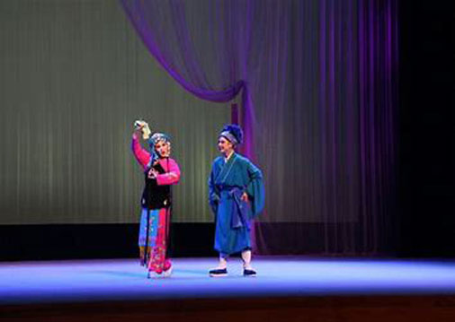

拐磨子
拐磨子，是出富有民间特色的小戏，也是五音戏中经常上演的传统戏保留剧目，该剧有专用的[逗歌]曲调，有长、短两种不同类型的连接过门，再配以手锣为主的打击乐，演员迈着秧歌步，载歌载舞，热闹红火，表现出劳动夫妻那纯真扑实的生活情趣。
剧中人物：李茂（40多岁），李妻（30多岁）（二人分别由生行和旦行应工）。
剧情梗概：
叙做豆腐能手李茂赶集揽到一宗利润丰厚的生意，兴冲冲赶回家里告知妻子，夫妻高兴不已，连夜赶做。在推磨、烧火、压豆腐的忙碌中，他们愉快风赶的唱着[逗歌]，中间有唱有说，唱中有分有和。因为精神爽，不觉累，时间也过的快。天待要亮时，二十四个豆腐也刚好做成，随即交付顾主。
这出由淄博市五音剧团整理并演出的小戏，1956年参加了山东省第三届戏曲观摩演出大会，获演出一等奖，鲜樱桃饰李妻，获示范演出纪念奖；王化同饰李茂，获演员二等然。1960年该戏进京在中南海怀仁堂向中央领导作汇报演出。1961年山东人民出版社出版单行本。1978年灌制成唱片，已收入《山东地方戏曲传统剧目汇编》五音戏第一集。
点击图片即可观看！
（图片来自zhuanti.cnjiwang.com）